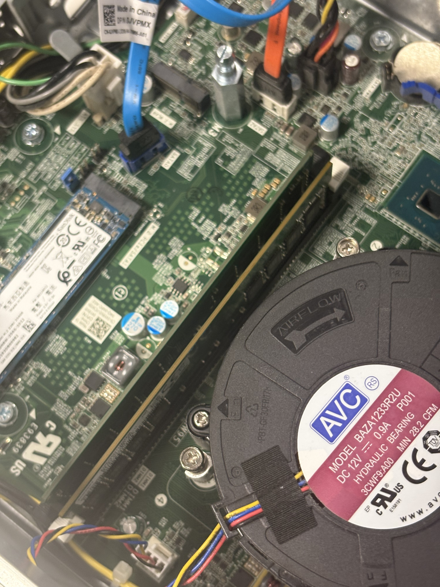

The SSD stands for solid state drive, which is used for storage and gives the computer more storage. An amazing fact; the SSD is that it has no fan unlike the hard disk drive and this causes the SSD to heat up and break more easier. However the SSD is much smaller and this makes it easily to install into the computer.
SSDs are commonly used in modern computers as it fits more comfortable in computers, and it helps to the computer to use less space; so that the computer can add more hardware and components that would improve the user performance and quality.
The RAM stands for random access memory, which is used to improve the memory and performance of computers. An amazing fact; is that some ram sticks are different and if I got the wrong ram stick then the RAM will be compatible with the computer.
RAM allows the user to open more applications at once. Also this improves the performance and quality of the computer to handle more demanding tasks.